Feedback · 매 수업 후
수업 피드백
주 1회 수업이 끝날 때마다 그날 수업 내용과 아이의 모습을 정리해 문자로 보내 드립니다.
한 수를 두기 전에,
먼저 생각하는 시간을 배웁니다.
First Visit
체스를 처음 배우는 아이도, 배운 적이 있는 아이도 체험수업에서 먼저 만납니다.
첫 체험수업은 무료입니다. 체험수업에서 아이의 지금 단계를 확인하고, 3개월 뒤 변화를 함께 확인해 보세요. 체험수업은 50분 동안 진행하며, 준비물은 없습니다.
EPA 3-Steps
더체스 EPA의 수업은 Exercise, Practice, Analysis 세 단계로 이어집니다.
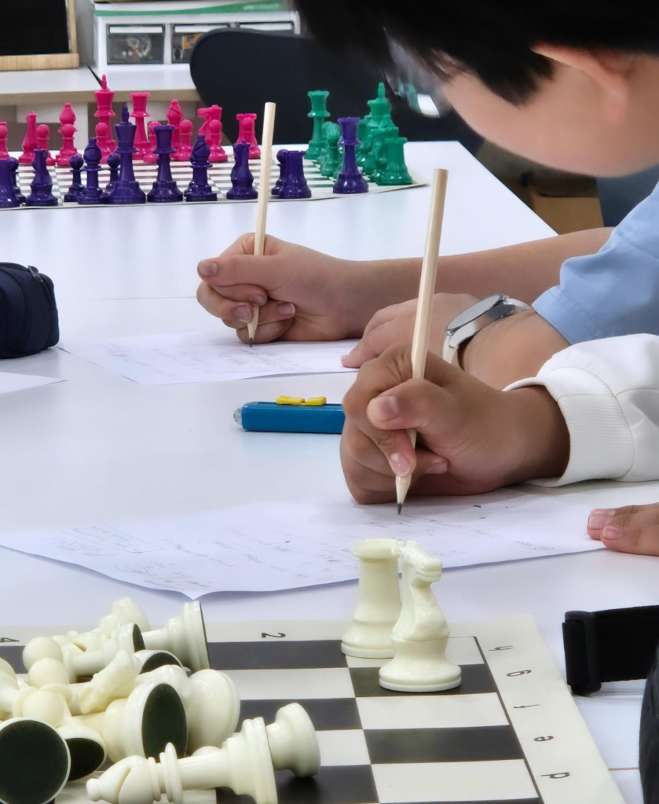
E
기물의 움직임과 규칙, 기본 전술을 배우고 문제를 풀며 익힙니다.
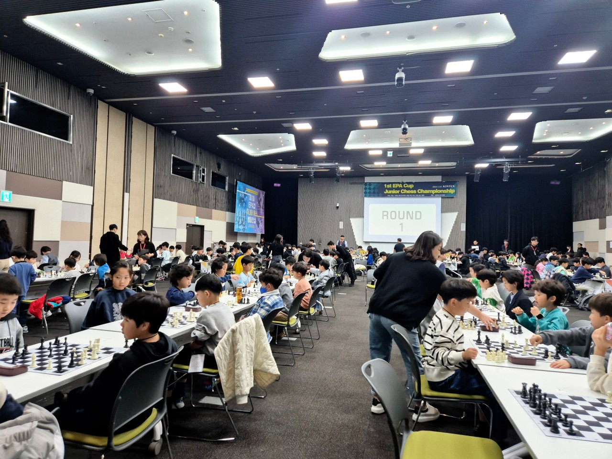
P
같은 레벨 친구와 마주 앉아 대국하고, 대회에 나가 실전 경험을 쌓습니다.
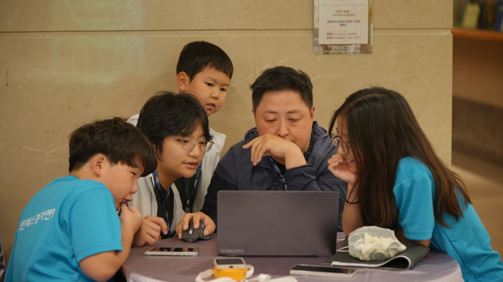
A
원장님과 함께 복기하며 왜 그 수를 뒀는지 말로 설명하고, 드러난 부분을 아이에게 맞춰 채워 갑니다.
Questions
아이가 스스로 이유를 찾도록 질문으로 수업을 이끕니다.
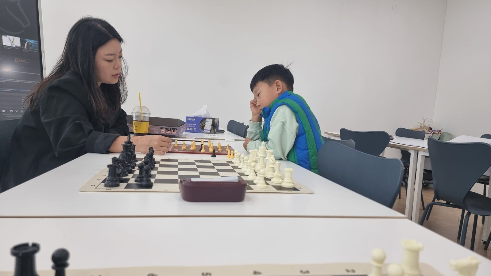
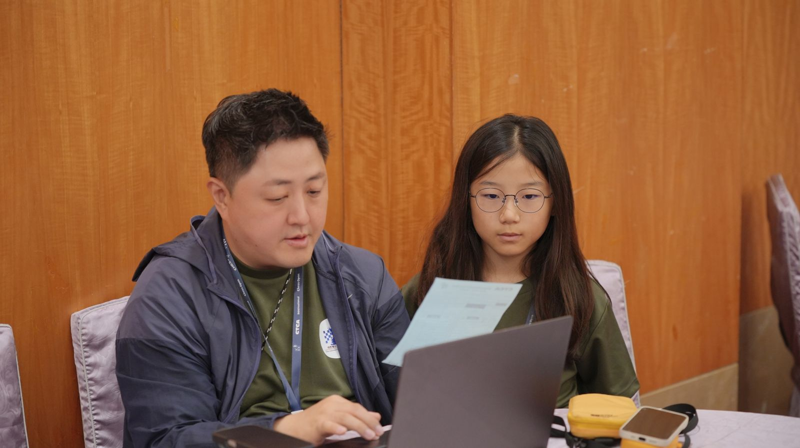

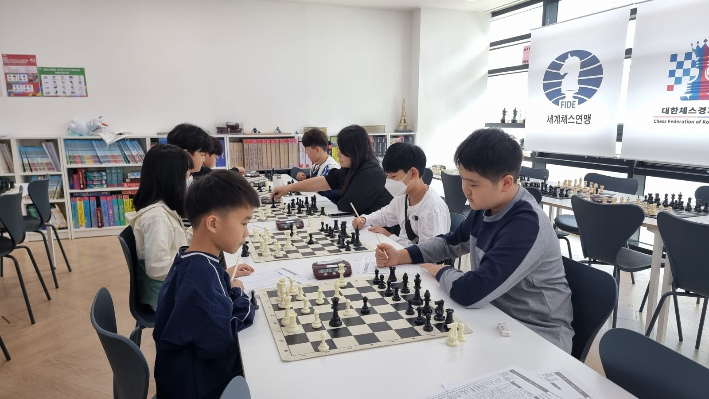
Report
수업은 이론수업, 문제풀이, 대국으로 이루어지고, 아이마다 다섯 가지를 보고 기록합니다.
Feedback · 매 수업 후
주 1회 수업이 끝날 때마다 그날 수업 내용과 아이의 모습을 정리해 문자로 보내 드립니다.
Report · 분기마다
한 분기 동안의 성장과 변화를 정리한 리포트를 보내 드립니다.
01
수업에서 배운 개념을 이해했는지 봅니다.
02
배운 내용을 대국에서 쓰는지 봅니다.
03
수를 두기 전에 생각하고 고르는지 봅니다.
04
문제 상황에서 답을 찾아가는 과정을 봅니다.
05
수업에 집중하고 참여하는 모습을 봅니다.
Classes
과정마다 누가 듣고 무엇을 배우는지 먼저 확인하세요. 체험수업에서 아이의 수준을 보고 반과 시간을 정합니다.
Kids Brain · 6–7세
체스와 보드게임으로 규칙을 익히고 기다리는 연습을 합니다.
Chess Basic · 입문
유아와 초등학생이 체스를 처음 배우는 입문반입니다. 기본 규칙과 전술을 익힙니다.
Chess Step Up
기본기를 익힌 아이가 한 단계 더 깊이 배우는 심화반입니다.
Chess Master
선수반입니다. 이경학 원장이 전담하고, 센터 수업에 온라인 수업을 더합니다.
Online
거리가 멀어도 집에서 듣는 소그룹 온라인 수업입니다.
Personal · 1:1
중고등학생도 시작할 수 있는 1:1 수업입니다. 온라인으로도 들을 수 있습니다.
Olympiad
초등 1학년 이상이 따로 듣는 대회 준비 수업입니다.
Others
Free Trial
체험수업 신청첫 체험수업 무료 · 50분 · 네이버 예약모든 반은 연습, 실전, 분석 순서로 진행합니다. 반과 수업 시간은 체험수업에서 아이의 수준을 본 뒤 안내해 드립니다.
| 과정 | 대상 · 수업 | 수업료 |
|---|---|---|
| 키즈 브레인 | 6–7세 · 주 1회 90분 | 180,000원 |
| 체스 베이직 | 유·초등 입문 · 주 1회 60분 | 130,000원 |
| 체스 스텝업 | 심화 · 주 1–2회 120분 | 180,000원 |
| 체스 마스터 | 선수반 · 주 210분 | 250,000원 |
| 마인드스포츠올림피아드 | 주 1회 60분 | 100,000원 |
| 체스 온라인 클래스 | 소그룹 60분 | 상담 시 안내 |
| 1:1 퍼스널 클래스 | 온라인 가능 | 상담 시 안내 |
자세한 내용은 상담 시 안내해 드립니다.
Teacher
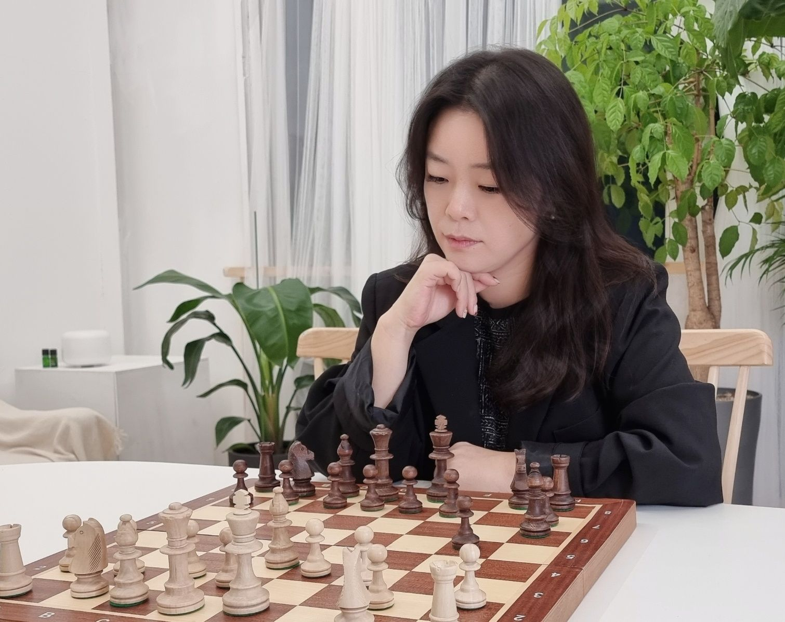
원장 · 사고력 체스 멘토
원장 · 선수반 전담
Activities
대회에 나가고 클럽데이에서 대국하며, 수업에서 배운 것을 실전에서 써 봅니다.
참가할 수 있는 체스 대회를 체스퀸 일정에서 서울·경기·인천의 접수 중인 대회를 골라 매일 자동으로 소개합니다(2026. 11. 19. 기준). 참가 조건과 접수는 각 대회 안내에서 확인해 주세요.
Club Day · 매월
매월 체스클럽데이를 엽니다. 재원생은 무료로 참여합니다.
이번 달 일정은 문자로 안내해 드립니다.
Online · 매주 토요일
매주 토요일 저녁 8시, 집에서 온라인으로 대국합니다. 재원생은 무료로 참여합니다.
| 대회 | 날짜 | 장소 |
|---|---|---|
| 제2회 경기도체스경기연맹 래피드 체스 챔피언십 (주관 경기도체스경기연맹) | 2026. 11. 1. | 더체스 EPA 아카데미 부천센터 |
| 마인드스포츠올림피아드 인천·부천 지역예선 | 2026. 9. 20. | 인천인재개발원 |
대회 소식과 결과는 블로그에도 올립니다.
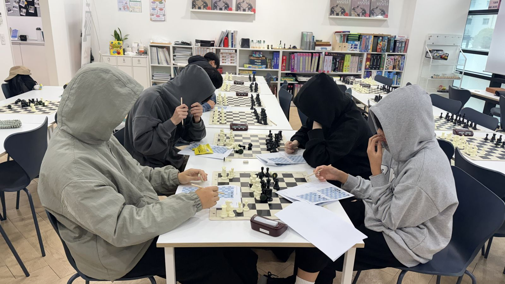
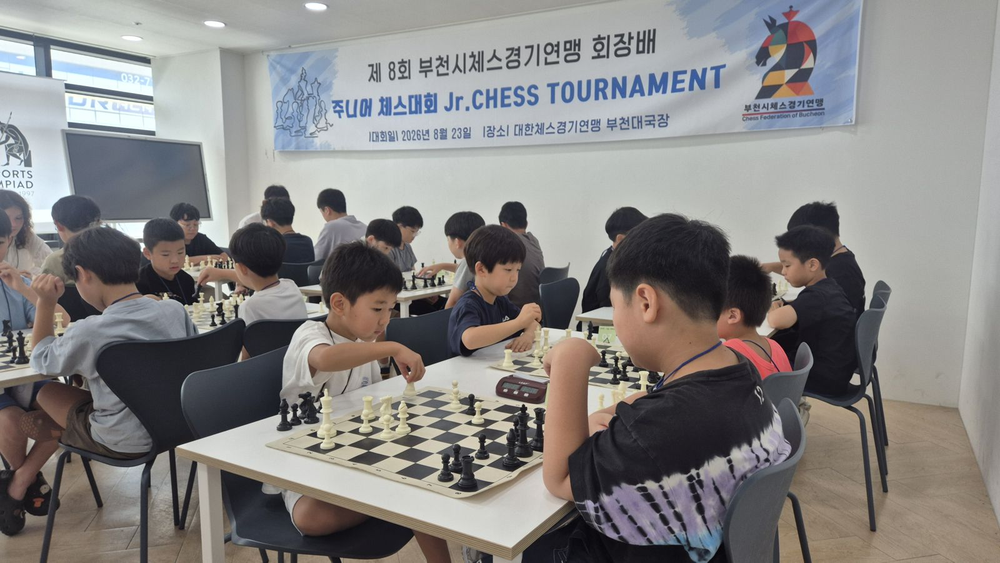
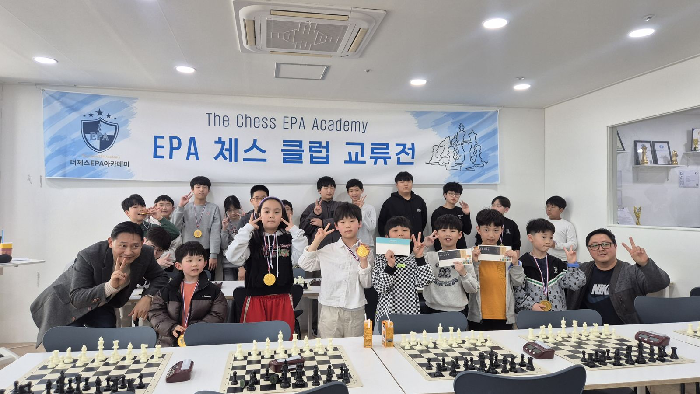
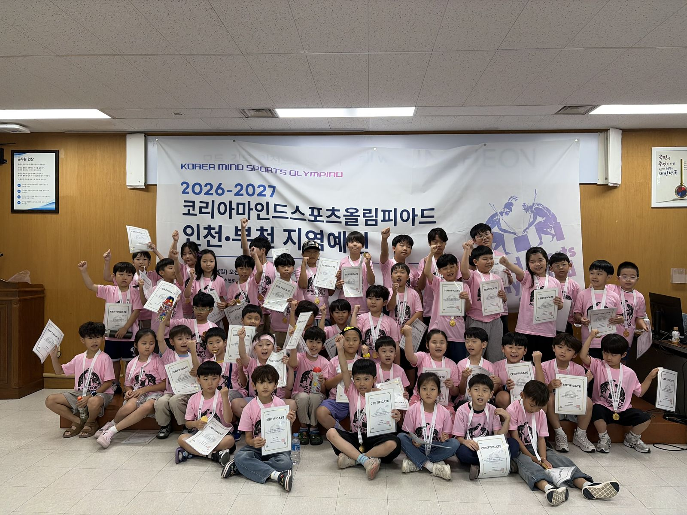

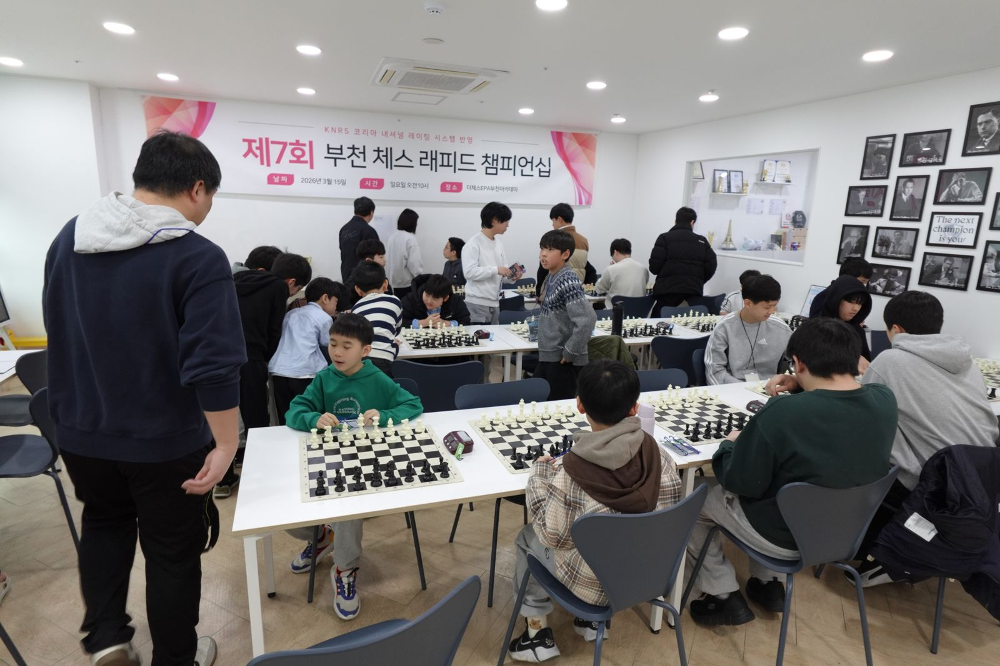
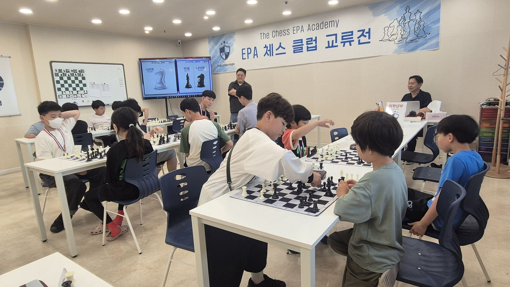
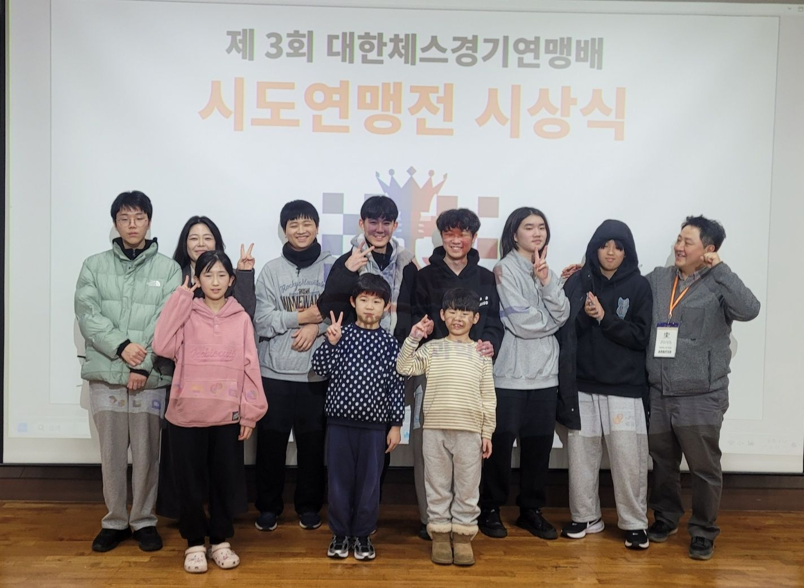
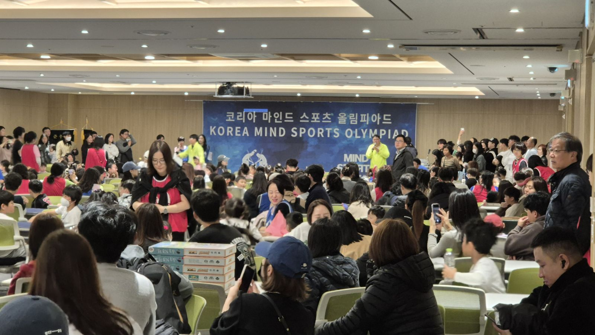
사진은 보호자 동의를 받아 올립니다. 내리기를 원하시면 02-6952-6587로 알려 주세요. 바로 내리겠습니다.
확인 필요: 학부모 후기, 대회 입상 실적이 있으면 함께
Notice
수업 일정, 대회, 클럽데이 소식을 블로그에 올리면 여기에도 보입니다.
블로그의 학원 공지, 대회, 클럽데이, 올림피아드 글을 매일 자동으로 모아 보여 드립니다(2026. 11. 25. 기준).
FAQ
6세부터 시작할 수 있어요.
6~7세는 키즈 브레인에서 체스와 보드게임으로 규칙과 기다리는 연습을 하고, 초등학생은 체스 베이직에서 기본 규칙과 전술을 배웁니다.
고학년도 늦지 않아요. 체험수업에서 단계를 확인하고 맞는 반에서 출발합니다. 중고등학생은 1:1 퍼스널 클래스(50분)로도 시작할 수 있어요.
네. 규칙을 처음 배우는 아이부터 수준에 맞춰 시작합니다.
키즈 브레인 주 1회 90분, 체스 베이직 주 1회 60분, 체스 스텝업 주 1–2회 120분, 체스 마스터 주 210분(센터 120분과 온라인 90분), 체스 온라인 클래스 60분입니다.
모든 반은 연습, 실전, 분석 순서로 진행합니다. 초등 1학년 이상은 마인드스포츠올림피아드(주 1회 60분)을 따로 들을 수 있어요.
반은 나이보다 체스 단계에 맞춰 나눕니다. 체험수업에서 아이의 현재 이해도를 확인하고 수준에 맞는 반에 배치해요.
같은 레벨이라면 나이가 조금 달라도 함께 두면서 배웁니다.
센터 수업에서는 두 가지가 더해집니다. 원장님과 함께 복기하며 왜 그 수를 뒀는지 말로 설명하고 생각을 정리해요. 그리고 같은 레벨 친구와 마주 앉아 대국하며, 드러난 부분을 아이에게 맞춰 채워 갑니다.
재원생은 매월 체스클럽데이와 매주 토요일 저녁 8시 온라인 대국에 무료로 참여할 수 있어요.
솔직히 아이마다 다릅니다. 시작한 나이, 이해도, 수업 밖에서 두는 시간, 아이의 성향에 따라 달라져요.
그래서 결과 대신 확인하는 방법을 약속드립니다. 수업이 끝날 때마다 피드백을 보내 드리고, 분기마다 리포트를 보내 드려요.
세계체스연맹 공인 트레이너인 원장 2인이 직접 지도합니다. 이원주 원장(FIDE National Instructor, 부천시체스경기연맹 회장)과 이경학 원장(FIDE Developmental Instructor, 경기도체스경기연맹 회장, 선수반 전담)이며, 두 원장 모두 체스 아비터(심판)로 대회 기획과 운영을 해 왔습니다. 원장 소개 보기
멀다면 온라인으로 들을 수 있어요. 소그룹 온라인 클래스(60분)가 있고, 1:1 수업도 온라인으로 가능합니다.
수업료는 저렴한 편은 아닙니다. 대신 공인 트레이너이자 연맹 회장인 두 원장이 직접 가르치고, 아이의 단계와 성장을 꼼꼼히 살핍니다.
첫 체험수업은 무료이고 50분 동안 진행합니다. 센터에 오시는 오프라인 체험과 집에서 듣는 온라인 체험 중 고르실 수 있습니다. 네이버 예약 또는 전화(02-6952-6587)로 신청해 주세요.
따로 준비하실 것은 없습니다.
네. 결석한 수업은 보강 수업으로 잡아 드립니다.
Location